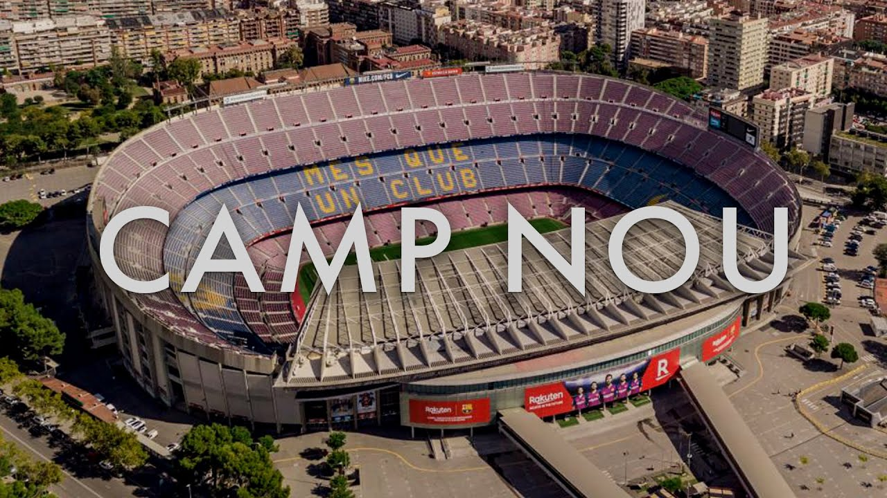

Visca el Barça!
Visca el Barça!
⚽ Lionel Messi is FC Barcelona’s all-time top scorer! 🏟️ Spotify Camp Nou will reopen in 2026! 🏆 Barça has won 5 Champions League titles! 🇪🇸 La Masia produced Xavi, Iniesta, and Messi! 🔵🔴 Visca el Barça i Visca Catalunya!
Your ultimate FC Barcelona fan destination.
Camp Nou has been the heart of FC Barcelona since 1957. It has witnessed historic goals, legendary players, and unforgettable victories. As it undergoes renovation, fans look forward to a new era while honoring its glorious past.
